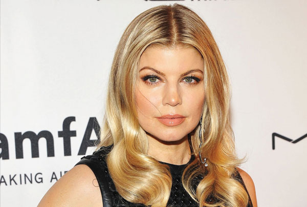

Age: 40
Top Songs: My Humps, Fergalicious, L.A Love, Big Girls Don't Cry
Net Worth: $45 million
 Fergie is the first and only girl on this list, and her place among the boys is well deserved. She might have had the most fame and time in the spotlight when she was with the Black Eyed Peas, but her career really took off when she left to go solo. Known for being one of the hottest bombshells around, she proved critics wrong that she could boast not just her humps, but her rapping and musical ability as a whole. She does have some major flaws, as her flow is slow and sometimes hard to understand and follow. Her lyrics can also be too complicated, and the beats on her songs are not the highest quality. She's already on the decline, but we thank Fergie's services to the rap game by giving her the number eight spot on our list.